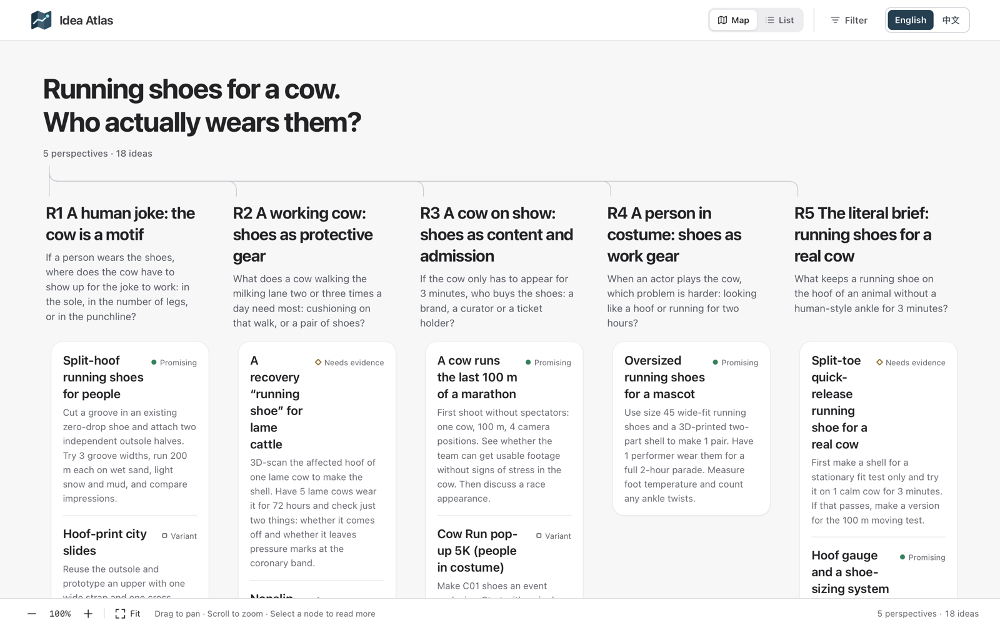
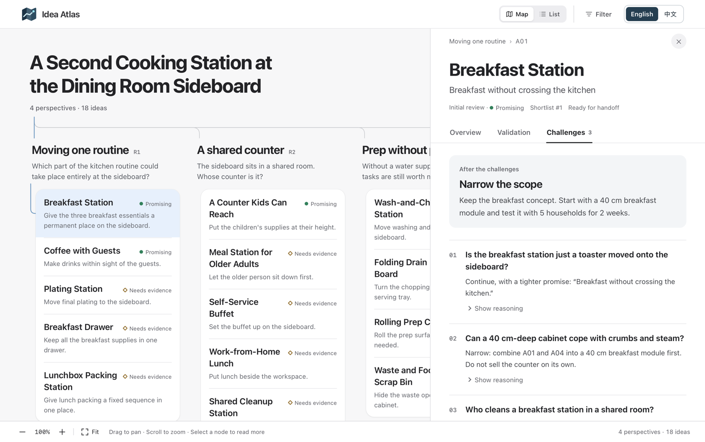

Running shoes for a cow
Who wears the shoes? Follow C01 from a cow-shaped footprint to a split sole for human runners. Two challenges put a pain-free 10 km run on its test plan.
Pick a brief. Open an idea to see its proposed test, or follow a challenge to the decision it changed.

Who wears the shoes? Follow C01 from a cow-shaped footprint to a split sole for human runners. Two challenges put a pain-free 10 km run on its test plan.

What can leave the kitchen? Open A01 to follow three challenges about the breakfast routine, steam and cleanup. Compare D04 to see why a full second kitchen was dropped.
Copy this message into Codex and replace the bracketed text with your design brief.